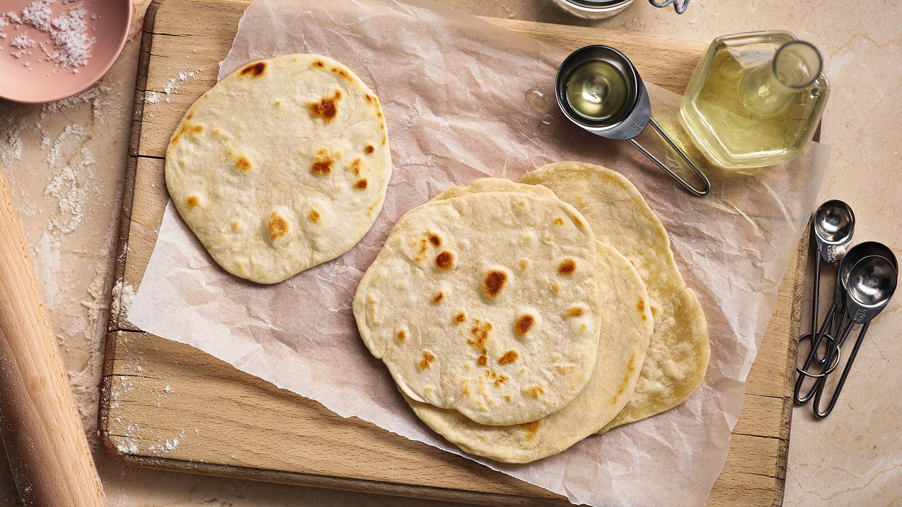

Tortila

Descrição
Essa massa de tortila é muito saborosa e fácil de fazer!
Ingredientes
- 125g de farinha de trigo branca comum, mais um pouco para polvilhar
- 1¼ de colher de chá de sal marinho fino
- 2 colheres de sopa de óleo de girassol ou óleo vegetal
Passo a passo
- Misture a farinha e o sal.
- Faça um buraco no centro e adicione 5 a 6 colheres de sopa de água morna junto com o óleo.
- Use as mãos para misturar até formar uma bola de massa.
- Transfira para uma superfície enfarinhada e sove por 5 a 10 minutos.
- Embrulhe a massa em filme plástico e deixe descansar por 20 minutos.
- Divida a massa em quatro partes e forme pequenas bolas.
- Polvilhe a superfície de trabalho com um pouco de farinha e abra cada bola até atingir cerca de 18 cm de diâmetro, com 2 a 3 mm de espessura.
- Grelhe cada massa em uma frigideira sem óleo, em fogo médio, por 20 segundos, pressionando levemente com uma espátula.
- Vire e cozinhe o outro lado por mais 20 segundos, até a tortilla ficar cozida, mas ainda macia e maleável.
- Repita o processo com as outras três tortillas.
> Voltar para as receitas!